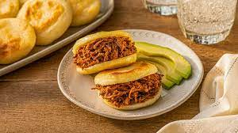

Arepas

The corn arepas are a traditional dish made from corn flour, fried or baked after being shaped as an oval/circular element, usually served with meat, avocado, cheese and beans
Ingredients
- Corn flour
- Cheese
- Salt
- Water
Steps
- First mix the flour with water, salt and grated cheese.
- Fry or bake accordin to users liking.
- Once ready cut by half and serve with loafed meat, avocado, guacamole and mashed beans inside.